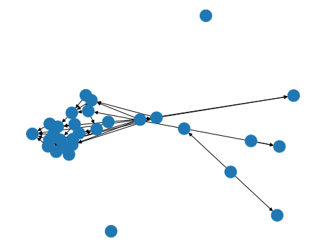
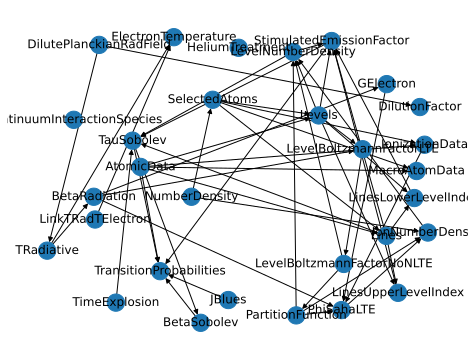
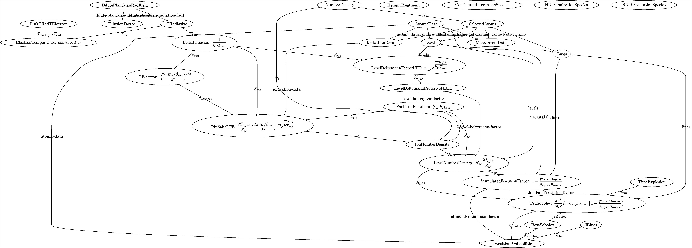
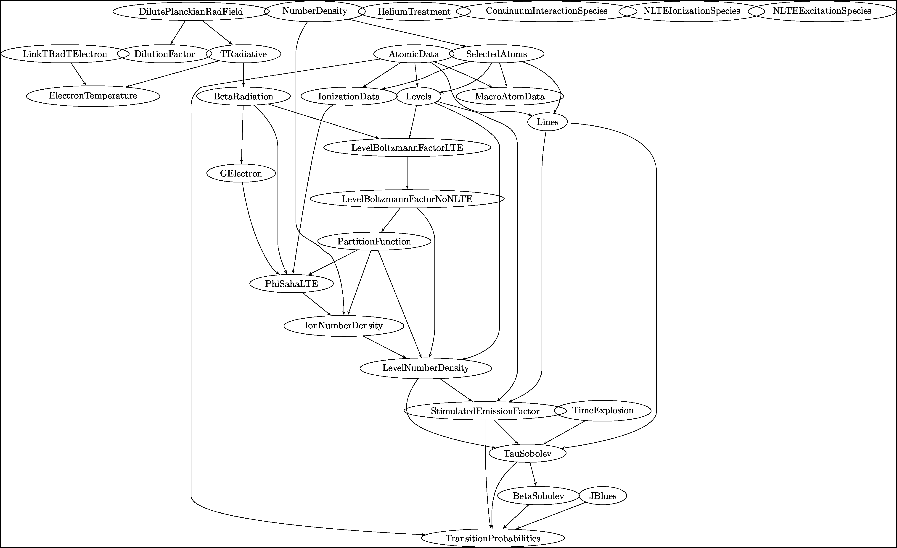
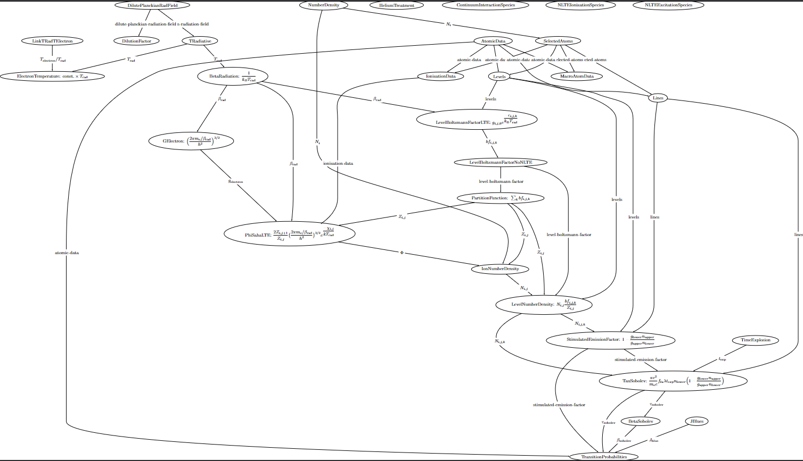

You can interact with this notebook online: Launch notebook
How to Generate the Plasma Graph¶
After running a simulation, TARDIS has the ability to create a graph showcasing how each variable used to compute the plasma state is connected and calculated (see the Plasma Documentation for more information). To do so, one needs to utilize the write_to_tex command to generate a .tex file that displays the graph. This how-to aims to showcase how the .tex file can be generated and
what options can be inputted to display the graph in a preferred method. To start, TARDIS needs to perform a simulation. Here the tardis_example.yml configuration file is used as in the quickstart guide.
[1]:
#downloading necessary modules
from tardis import run_tardis
from tardis.io.atom_data import download_atom_data
import networkx as nx
from IPython.display import Image, display
[2]:
#downloading atom data
download_atom_data('kurucz_cd23_chianti_H_He_latest')
Atomic Data kurucz_cd23_chianti_H_He_latest already exists in /home/runner/Downloads/tardis-data/kurucz_cd23_chianti_H_He_latest.h5. Will not download - override with force_download=True.
[3]:
#running simulation
sim = run_tardis('tardis_example.yml')
Auto-detected Sphinx build environment
Auto-detected Sphinx build environment
Initializing tabulator and plotly panel extensions for widgets to work
Embedding the final state for Jupyter environments
Displaying the Graph Within A Jupyter Notebook¶
Now that TARDIS has finished a simulation run, the plasma graph can now be generated. To display the basic graph within a Jupyter Notebook, one can simply use the nx.draw as follows:
[4]:
%pylab inline
nx.draw(sim.plasma.graph)
%pylab is deprecated, use %matplotlib inline and import the required libraries.
Populating the interactive namespace from numpy and matplotlib

There are many different ways of displaying the graph in a more readable format. One such example is shown below.
[5]:
position = nx.spring_layout(sim.plasma.graph, k=0.75, iterations=15)
nx.draw(sim.plasma.graph, position, with_labels=True)

Note
For the purposes of this how-to, pylab inline has been used to display the graph within the how-to page. It is recommended to use pylab notebook when displaying the graph on a local Jupyter Notebook to explore the nodes in depth.
Saving the Graph Onto a .tex File¶
With the write_to_tex command, a copy of the graph can be saved within a .tex file. Currently, there are four parameters TARDIS uses to write the graph in LaTeX and save it to a .tex file:
fname_graph: The name of the file TARDIS will save the graph onto (required)
scale: a scaling factor to expand/contract the generated graph
args: a list of optional settings for displaying the graph
latex_label: a parameter that enables or disables writing LaTeX equations and edge labels onto the file (default set to True to enable writing)
With these parameters, TARDIS can write the graph in many different ways. For this how-to, only a few examples will be shown to display what each parameter exactly does and what the resulting graph will look like when generated in a LaTeX environment.
Warning
As of now, TARDIS has an issue of not spacing edges correctly, causing the default output to look very condensed and unreadable in certain areas. It is recommended, therefore, to use the given parameters to generate a graph that displays everything in as readable a format as possible.
Default Plasma Graph¶
From above, TARDIS only needs the name of the file it should save the graph to as default.
[6]:
sim.plasma.write_to_tex("plasma_graph_default.tex")
With the default settings, the contents of the file will simply be the graph written in LaTeX.
[7]:
with open("plasma_graph_default.tex", "r") as file:
print(file.read())
file.close()
\documentclass[class=minimal,border=20pt]{standalone}
\usepackage[x11names, svgnames, rgb]{xcolor}
\usepackage[utf8]{inputenc}
\usepackage{tikz}
\usetikzlibrary{snakes,arrows,shapes}
\usepackage{amsmath}
%
%
\usepackage[active,tightpage]{preview}
\PreviewEnvironment{tikzpicture}
\setlength\PreviewBorder{0pt}%
%
\begin{document}
\pagestyle{empty}
%
%
%
% Start of code
\begin{tikzpicture}[>=latex',line join=bevel,scale=0.5]
%%
\node (DilutePlanckianRadField) at (784.87bp,1150.6bp) [draw,ellipse] {$\textrm{DilutePlanckianRadField}$};
\node (TRadiative) at (972.87bp,1061.4bp) [draw,ellipse] {$\textrm{TRadiative}$};
\node (DilutionFactor) at (712.87bp,1061.4bp) [draw,ellipse] {$\textrm{DilutionFactor}$};
\node (ElectronTemperature) at (366.87bp,972.1bp) [draw,ellipse] {$\textrm{ElectronTemperature: }\textrm{const.}\times T_{\textrm{rad}}$};
\node (BetaRadiation) at (1103.9bp,972.1bp) [draw,ellipse] {$\textrm{BetaRadiation: }\dfrac{1}{k_{B} T_{\textrm{rad}}}$};
\node (NumberDensity) at (1675.9bp,1150.6bp) [draw,ellipse] {$\textrm{NumberDensity}$};
\node (SelectedAtoms) at (2400.9bp,1061.4bp) [draw,ellipse] {$\textrm{SelectedAtoms}$};
\node (IonNumberDensity) at (2194.9bp,488.35bp) [draw,ellipse] {$\textrm{IonNumberDensity}$};
\node (Levels) at (2175.9bp,972.1bp) [draw,ellipse] {$\textrm{Levels}$};
\node (Lines) at (2797.9bp,918.1bp) [draw,ellipse] {$\textrm{Lines}$};
\node (IonizationData) at (1936.9bp,972.1bp) [draw,ellipse] {$\textrm{IonizationData}$};
\node (MacroAtomData) at (2461.9bp,972.1bp) [draw,ellipse] {$\textrm{MacroAtomData}$};
\node (LevelNumberDensity) at (2333.9bp,399.1bp) [draw,ellipse] {$\textrm{LevelNumberDensity: }N_{i,j}\dfrac{bf_{i,j,k}}{Z_{i,j}}$};
\node (TimeExplosion) at (3218.9bp,309.85bp) [draw,ellipse] {$\textrm{TimeExplosion}$};
\node (TauSobolev) at (2878.9bp,208.55bp) [draw,ellipse] {$\textrm{TauSobolev: }\dfrac{\pi e^{2}}{m_{e} c}f_{lu}\lambda t_{exp} n_{lower} \Big(1-\dfrac{g_{lower}n_{upper}}{g_{upper}n_{lower}}\Big)$};
\node (TransitionProbabilities) at (2574.9bp,18.0bp) [draw,ellipse] {$\textrm{TransitionProbabilities}$};
\node (BetaSobolev) at (2717.9bp,107.25bp) [draw,ellipse] {$\textrm{BetaSobolev}$};
\node (AtomicData) at (2133.9bp,1061.4bp) [draw,ellipse] {$\textrm{AtomicData}$};
\node (LevelBoltzmannFactorLTE) at (2075.9bp,864.1bp) [draw,ellipse] {$\textrm{LevelBoltzmannFactorLTE: }g_{i,j,k}e^{\dfrac{-\epsilon_{i,j,k}}{k_{\textrm{B}}T_{\textrm{rad}}}}$};
\node (StimulatedEmissionFactor) at (2601.9bp,309.85bp) [draw,ellipse] {$\textrm{StimulatedEmissionFactor: }1-\dfrac{g_{lower}n_{upper}}{g_{upper}n_{lower}}$};
\node (PhiSahaLTE) at (1343.9bp,577.6bp) [draw,ellipse] {$\textrm{PhiSahaLTE: }\dfrac{2Z_{i,j+1}}{Z_{i,j}}\big( \dfrac{2\pi m_{e}/\beta_{\textrm{rad}}}{h^2} \big)^{3/2}e^{\dfrac{-\chi_{i,j}}{kT_{\textrm{rad}}}}$};
\node (JBlues) at (2945.9bp,107.25bp) [draw,ellipse] {$\textrm{JBlues}$};
\node (LinkTRadTElectron) at (366.87bp,1061.4bp) [draw,ellipse] {$\textrm{LinkTRadTElectron}$};
\node (HeliumTreatment) at (1977.9bp,1150.6bp) [draw,ellipse] {$\textrm{HeliumTreatment}$};
\node (ContinuumInteractionSpecies) at (2349.9bp,1150.6bp) [draw,ellipse] {$\textrm{ContinuumInteractionSpecies}$};
\node (NLTEIonizationSpecies) at (2748.9bp,1150.6bp) [draw,ellipse] {$\textrm{NLTEIonizationSpecies}$};
\node (NLTEExcitationSpecies) at (3115.9bp,1150.6bp) [draw,ellipse] {$\textrm{NLTEExcitationSpecies}$};
\node (GElectron) at (926.87bp,810.1bp) [draw,ellipse] {$\textrm{GElectron: }\Big(\dfrac{2\pi m_{e}/\beta_{\textrm{rad}}}{h^2}\Big)^{3/2}$};
\node (LevelBoltzmannFactorNoNLTE) at (2151.9bp,756.1bp) [draw,ellipse] {$\textrm{LevelBoltzmannFactorNoNLTE}$};
\node (PartitionFunction) at (2151.9bp,666.85bp) [draw,ellipse] {$\textrm{PartitionFunction: }\sum_{k}bf_{i,j,k}$};
\draw [->] (DilutePlanckianRadField) ..controls (851.85bp,1118.5bp) and (894.95bp,1098.5bp) .. (TRadiative);
\definecolor{strokecol}{rgb}{0.0,0.0,0.0};
\pgfsetstrokecolor{strokecol}
\draw (897.96bp,1101.3bp) node {dilute-planckian-radiation-field};
\draw [->] (DilutePlanckianRadField) ..controls (760.29bp,1119.8bp) and (746.09bp,1102.6bp) .. (DilutionFactor);
\draw (757.57bp,1101.3bp) node {dilute-planckian-radiation-field};
\draw [->] (TRadiative) ..controls (789.18bp,1033.9bp) and (612.58bp,1008.5bp) .. (ElectronTemperature);
\draw (726.4bp,1012.05bp) node {$T_{\textrm{rad}}$};
\draw [->] (TRadiative) ..controls (1018.1bp,1030.2bp) and (1046.2bp,1011.5bp) .. (BetaRadiation);
\draw (1052.36bp,1012.05bp) node {$T_{\textrm{rad}}$};
\draw [->] (NumberDensity) ..controls (1909.8bp,1121.4bp) and (2152.6bp,1092.2bp) .. (SelectedAtoms);
\draw (2105.56bp,1101.3bp) node {$N_{i}$};
\draw [->] (NumberDensity) ..controls (1531.6bp,1120.9bp) and (1445.9bp,1095.7bp) .. (1445.9bp,1062.4bp) .. controls (1445.9bp,1062.4bp) and (1445.9bp,1062.4bp) .. (1445.9bp,809.1bp) .. controls (1445.9bp,775.79bp) and (1444.9bp,760.18bp) .. (1469.9bp,738.1bp) .. controls (1616.4bp,608.45bp) and (1708.1bp,682.38bp) .. (1900.9bp,648.85bp) .. controls (1984.2bp,634.35bp) and (2222.4bp,659.48bp) .. (2277.9bp,595.6bp) .. controls (2301.9bp,567.94bp) and (2265.5bp,534.38bp) .. (IonNumberDensity);
\draw (1448.12bp,805.43bp) node {$N_{i}$};
\draw [->] (SelectedAtoms) ..controls (2375.0bp,1031.5bp) and (2359.0bp,1016.7bp) .. (2341.9bp,1008.1bp) .. controls (2318.5bp,996.34bp) and (2291.4bp,988.52bp) .. (Levels);
\draw (2369.03bp,1012.05bp) node {selected-atoms};
\draw [->] (SelectedAtoms) ..controls (2493.4bp,1030.4bp) and (2556.4bp,1009.6bp) .. (2610.9bp,990.1bp) .. controls (2657.6bp,973.42bp) and (2710.4bp,953.24bp) .. (Lines);
\draw (2559.84bp,1012.05bp) node {selected-atoms};
\draw [->] (SelectedAtoms) ..controls (2291.1bp,1034.0bp) and (2225.2bp,1019.0bp) .. (2166.9bp,1008.1bp) .. controls (2125.2bp,1000.3bp) and (2079.1bp,993.01bp) .. (IonizationData);
\draw (2253.09bp,1012.05bp) node {selected-atoms};
\draw [->] (SelectedAtoms) ..controls (2421.6bp,1030.7bp) and (2433.5bp,1013.7bp) .. (MacroAtomData);
\draw (2439.09bp,1012.05bp) node {selected-atoms};
\draw [->] (IonNumberDensity) ..controls (2243.3bp,456.96bp) and (2273.2bp,438.21bp) .. (LevelNumberDensity);
\draw (2279.07bp,439.05bp) node {$N_{i,j}$};
\draw [->] (TimeExplosion) ..controls (3117.4bp,279.22bp) and (3047.5bp,258.81bp) .. (TauSobolev);
\draw (3091.58bp,260.55bp) node {$t_{\textrm{exp}}$};
\draw [->] (TauSobolev) ..controls (2659.2bp,166.22bp) and (2602.0bp,147.85bp) .. (2583.4bp,125.25bp) .. controls (2565.7bp,103.85bp) and (2565.8bp,71.091bp) .. (TransitionProbabilities);
\draw (2585.62bp,102.58bp) node {$\tau_{\textrm{sobolev}}$};
\draw [->] (TauSobolev) ..controls (2807.0bp,163.24bp) and (2777.7bp,145.17bp) .. (BetaSobolev);
\draw (2800.62bp,147.2bp) node {$\tau_{\textrm{sobolev}}$};
\draw [->] (AtomicData) ..controls (2148.0bp,1030.9bp) and (2156.0bp,1014.3bp) .. (Levels);
\draw (2160.89bp,1012.05bp) node {atomic-data};
\draw [->] (AtomicData) ..controls (2227.3bp,1042.3bp) and (2244.4bp,1035.2bp) .. (2258.9bp,1025.4bp) .. controls (2291.7bp,1003.0bp) and (2277.7bp,972.59bp) .. (2312.9bp,954.1bp) .. controls (2351.9bp,933.61bp) and (2665.1bp,941.25bp) .. (2708.9bp,936.1bp) .. controls (2715.3bp,935.35bp) and (2721.9bp,934.4bp) .. (Lines);
\draw (2277.45bp,1012.05bp) node {atomic-data};
\draw [->] (AtomicData) ..controls (2065.1bp,1029.9bp) and (2019.2bp,1009.6bp) .. (IonizationData);
\draw (2055.27bp,1012.05bp) node {atomic-data};
\draw [->] (AtomicData) ..controls (1703.9bp,1039.9bp) and (795.12bp,996.21bp) .. (780.87bp,990.1bp) .. controls (759.49bp,980.93bp) and (761.82bp,967.61bp) .. (742.87bp,954.1bp) .. controls (644.13bp,883.73bp) and (581.91bp,918.31bp) .. (500.87bp,828.1bp) .. controls (407.6bp,724.28bp) and (390.87bp,673.54bp) .. (390.87bp,533.98bp) .. controls (390.87bp,533.98bp) and (390.87bp,533.98bp) .. (390.87bp,106.25bp) .. controls (390.87bp,56.294bp) and (1869.4bp,29.478bp) .. (TransitionProbabilities);
\draw (393.14bp,528.3bp) node {atomic-data};
\draw [->] (AtomicData) ..controls (2242.5bp,1042.5bp) and (2274.5bp,1035.0bp) .. (2302.9bp,1025.4bp) .. controls (2319.5bp,1019.7bp) and (2322.0bp,1014.4bp) .. (2338.4bp,1008.1bp) .. controls (2354.3bp,1002.0bp) and (2371.6bp,996.49bp) .. (MacroAtomData);
\draw (2340.62bp,1012.05bp) node {atomic-data};
\draw [->] (Levels) ..controls (2143.6bp,936.94bp) and (2118.5bp,910.32bp) .. (LevelBoltzmannFactorLTE);
\draw (2142.92bp,913.43bp) node {$\textrm{levels}$};
\draw [->] (Levels) ..controls (2255.0bp,957.57bp) and (2268.3bp,955.64bp) .. (2280.9bp,954.1bp) .. controls (2374.9bp,942.59bp) and (2697.9bp,959.86bp) .. (2697.9bp,865.1bp) .. controls (2697.9bp,865.1bp) and (2697.9bp,865.1bp) .. (2697.9bp,398.1bp) .. controls (2697.9bp,369.9bp) and (2674.9bp,348.41bp) .. (StimulatedEmissionFactor);
\draw (2700.12bp,617.55bp) node {$\textrm{metastability}$};
\draw [->] (Levels) ..controls (2364.8bp,940.38bp) and (2605.7bp,899.49bp) .. (2640.9bp,882.1bp) .. controls (2651.0bp,877.08bp) and (2659.9bp,876.44bp) .. (2659.9bp,865.1bp) .. controls (2659.9bp,865.1bp) and (2659.9bp,865.1bp) .. (2659.9bp,487.35bp) .. controls (2659.9bp,451.26bp) and (2584.4bp,429.7bp) .. (LevelNumberDensity);
\draw (2662.12bp,662.18bp) node {$\textrm{levels}$};
\draw [->] (Lines) ..controls (3034.8bp,897.15bp) and (3378.9bp,861.6bp) .. (3378.9bp,811.1bp) .. controls (3378.9bp,811.1bp) and (3378.9bp,811.1bp) .. (3378.9bp,308.85bp) .. controls (3378.9bp,269.92bp) and (3319.8bp,246.02bp) .. (TauSobolev);
\draw (3381.12bp,572.93bp) node {$\textrm{lines}$};
\draw [->] (Lines) ..controls (2780.4bp,879.32bp) and (2766.9bp,843.51bp) .. (2766.9bp,811.1bp) .. controls (2766.9bp,811.1bp) and (2766.9bp,811.1bp) .. (2766.9bp,398.1bp) .. controls (2766.9bp,365.06bp) and (2740.7bp,344.5bp) .. (StimulatedEmissionFactor);
\draw (2769.12bp,617.55bp) node {$\textrm{lines}$};
\draw [->] (IonizationData) ..controls (1689.3bp,964.68bp) and (1528.2bp,955.99bp) .. (1505.9bp,936.1bp) .. controls (1481.9bp,914.69bp) and (1491.9bp,897.27bp) .. (1491.9bp,865.1bp) .. controls (1491.9bp,865.1bp) and (1491.9bp,865.1bp) .. (1491.9bp,665.85bp) .. controls (1491.9bp,633.7bp) and (1465.6bp,613.15bp) .. (PhiSahaLTE);
\draw (1494.12bp,751.43bp) node {ionization-data};
\draw [->] (JBlues) ..controls (2826.2bp,78.109bp) and (2724.3bp,54.147bp) .. (TransitionProbabilities);
\draw (2795.85bp,57.95bp) node {$J_{\textrm{blue}}$};
\draw [->] (LinkTRadTElectron) ..controls (366.87bp,1031.3bp) and (366.87bp,1015.3bp) .. (ElectronTemperature);
\draw (369.12bp,1012.05bp) node {$T_{\textrm{electron}}/T_{\textrm{rad}}$};
\draw [->] (BetaRadiation) ..controls (1053.1bp,925.18bp) and (990.41bp,868.54bp) .. (GElectron);
\draw (1064.66bp,913.43bp) node {$\beta_{\textrm{rad}}$};
\draw [->] (BetaRadiation) ..controls (1422.8bp,936.33bp) and (1724.1bp,903.47bp) .. (LevelBoltzmannFactorLTE);
\draw (1735.98bp,913.43bp) node {$\beta_{\textrm{rad}}$};
\draw [->] (BetaRadiation) ..controls (1262.0bp,936.15bp) and (1364.9bp,904.41bp) .. (1364.9bp,865.1bp) .. controls (1364.9bp,865.1bp) and (1364.9bp,865.1bp) .. (1364.9bp,665.85bp) .. controls (1364.9bp,645.73bp) and (1359.5bp,623.69bp) .. (PhiSahaLTE);
\draw (1367.12bp,751.43bp) node {$\beta_{\textrm{rad}}$};
\draw [->] (GElectron) ..controls (1032.5bp,750.72bp) and (1219.2bp,647.51bp) .. (PhiSahaLTE);
\draw (1120.58bp,706.8bp) node {$g_{\textrm{electron}}$};
\draw [->] (LevelBoltzmannFactorLTE) ..controls (2100.1bp,829.25bp) and (2118.8bp,803.28bp) .. (LevelBoltzmannFactorNoNLTE);
\draw (2127.37bp,805.43bp) node {$bf_{i,j,k}$};
\draw [->] (PhiSahaLTE) ..controls (1676.1bp,542.54bp) and (1923.3bp,517.2bp) .. (IonNumberDensity);
\draw (1847.85bp,528.3bp) node {$\Phi$};
\draw [->] (StimulatedEmissionFactor) ..controls (2687.9bp,278.02bp) and (2741.5bp,258.81bp) .. (TauSobolev);
\draw (2742.62bp,260.55bp) node {stimulated-emission-factor};
\draw [->] (StimulatedEmissionFactor) ..controls (2436.5bp,281.72bp) and (2407.0bp,265.05bp) .. (2387.9bp,238.6bp) .. controls (2332.8bp,162.55bp) and (2458.8bp,80.08bp) .. (TransitionProbabilities);
\draw (2397.36bp,147.2bp) node {stimulated-emission-factor};
\draw [->] (LevelNumberDensity) ..controls (2157.7bp,365.61bp) and (2080.7bp,337.21bp) .. (2121.4bp,291.85bp) .. controls (2148.3bp,261.81bp) and (2321.8bp,241.7bp) .. (TauSobolev);
\draw (2123.62bp,305.18bp) node {$N_{i,j,k}$};
\draw [->] (LevelNumberDensity) ..controls (2430.2bp,366.75bp) and (2491.7bp,346.73bp) .. (StimulatedEmissionFactor);
\draw (2494.13bp,349.8bp) node {$N_{i,j,k}$};
\draw [->] (PartitionFunction) ..controls (2262.9bp,639.22bp) and (2293.3bp,622.53bp) .. (2310.9bp,595.6bp) .. controls (2328.2bp,569.07bp) and (2329.8bp,549.77bp) .. (2310.9bp,524.35bp) .. controls (2306.3bp,518.23bp) and (2300.7bp,513.13bp) .. (IonNumberDensity);
\draw (2326.67bp,572.93bp) node {$Z_{i,j}$};
\draw [->] (PartitionFunction) ..controls (1880.5bp,636.55bp) and (1664.6bp,613.24bp) .. (PhiSahaLTE);
\draw (1822.49bp,617.55bp) node {$Z_{i,j}$};
\draw [->] (PartitionFunction) ..controls (2287.9bp,640.19bp) and (2316.9bp,623.36bp) .. (2332.9bp,595.6bp) .. controls (2361.1bp,546.48bp) and (2365.8bp,526.33bp) .. (2356.9bp,470.35bp) .. controls (2354.6bp,455.95bp) and (2349.8bp,440.48bp) .. (LevelNumberDensity);
\draw (2362.68bp,528.3bp) node {$Z_{i,j}$};
\draw [->] (BetaSobolev) ..controls (2668.2bp,75.935bp) and (2636.9bp,56.859bp) .. (TransitionProbabilities);
\draw (2661.43bp,57.95bp) node {$\beta_{\textrm{sobolev}}$};
\draw [->] (LevelBoltzmannFactorNoNLTE) ..controls (2335.6bp,726.74bp) and (2421.9bp,703.51bp) .. (2421.9bp,667.85bp) .. controls (2421.9bp,667.85bp) and (2421.9bp,667.85bp) .. (2421.9bp,487.35bp) .. controls (2421.9bp,460.18bp) and (2400.5bp,438.58bp) .. (LevelNumberDensity);
\draw (2424.12bp,572.93bp) node {level-boltzmann-factor};
\draw [->] (LevelBoltzmannFactorNoNLTE) ..controls (2151.9bp,726.04bp) and (2151.9bp,710.06bp) .. (PartitionFunction);
\draw (2154.12bp,706.8bp) node {level-boltzmann-factor};
%
\end{tikzpicture}
% End of code
%
\end{document}
%
If one was to build the .tex file, the following graph will be generated:
[8]:
display(Image('plasma_graph_default.png', unconfined=False))

Note
For the remainder of this how-to, the contents of the .tex file will be omitted and only the generated graph will be shown.
Plasma Graph with Different Scale¶
One can change the scaling of the graph by passing in a positive, non-zero float into the scale parameter to either make the resulting graph larger (scale > 0.5) or smaller (scale < 0.5).
[9]:
sim.plasma.write_to_tex("plasma_graph_scaled.tex", scale = 1.25)
With a scale of 1.25, the graph TARDIS will output will look as follows:
[10]:
display(Image('plasma_graph_scaled.png', unconfined=False))

Plasma Graph with No Equations¶
TARDIS has the option to generate a graph without any equations or edge labels via the latex_label command. The graph in this case will only consist of nodes containing the names of variables used to calculate the plasma state connected with edges.
[11]:
sim.plasma.write_to_tex("plasma_graph_no_eq.tex", latex_label=False)
With these inputs, the graph will look like this:
[12]:
display(Image('plasma_graph_no_eq.png', unconfined=True))

Plasma Graph with Inputted Arguments¶
In order to create the .tex file, TARDIS will first convert the graph into a readable DOT format via the write_to_dot function. As such, using the args parameter within the write_to_tex function, one can pass in any Graphviz attribute for TARDIS to implement as a list. In this example, the following attributes are used:
nodesep: changes spacing of nodes
edge[lblstyle]: edits the edge labels
margin: sets the margins of the outputted graph
ratio: sets the drawing height and width
size: sets the maximum height and width of the graph
For more information on these attributes, visit the Graphviz attributes documentation.
[13]:
attributes_list = [r"nodesep=0.5", r'edge[lblstyle="fill=white"]', r'margin=0', r'ratio="fill"', r'size="7,4!"']
sim.plasma.write_to_tex("plasma_graph_with_args.tex", args=attributes_list)
With these attributes, the following graph can be generated:
[14]:
display(Image('plasma_graph_args.png', unconfined=True))
